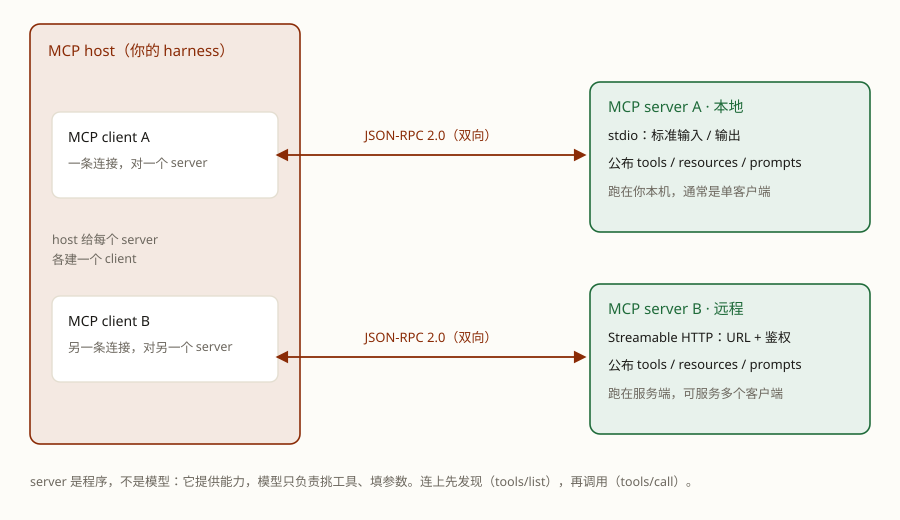

在技能广场里下载个东西、装上，agent 就多了一样本事。再下载一个，又多一样。MCP 和 Skill 不都是这么回事吗？看起来是——产品甚至把两个的入口做成了一个样子。
但装完之后多出来的东西不一样：MCP 多的是"动作"，Skill 多的是"做法"。这课先把前一半讲透：你装 MCP 的时候，装进去的到底是什么。
学完这课，你能：在你已经装过的东西里认出 MCP；说清它给 agent 多的是什么；说清三个角色和一次"发现 → 调用"；分清本地/远程，填对配置、排掉最常见的错；知道什么时候不值得用 MCP。
MCP 给能力，Skill 给做法。这课只拆前一半：能力是怎么"接"进 agent 的。看到任何东西，先问它多出来的是动作还是做法。
回想一下你用 TeleAgent 干过的事：设置里粘过一段 JSON，或者在广场里点过"下载安装"。装完回到对话里一试——它会查天气了、能读数据库了、能帮你发消息了。
这件事干的就是 MCP。你已经用过它，只是产品没在按钮上写这三个字母。
装之前，agent 会的就两样：说话、转循环（第 1 课拆过的那个）。装之后，它多了手：多出来的是一批能做的动作。记住这个感觉，整课都从它往下长。
你的第一感觉多半是："不都是下载一个东西、装上、agent 变能干吗？"这个感觉是对的。它们都是扩展：装之前不会，装之后会。产品还越来越把入口做成一样——在 TeleAgent 里，两类都在技能广场里下载装上，更像了。
但装完看多出来的是什么，差别就出来了。装了天气 MCP，agent 多的是"查天气"这个动作：你说"查一下北京天气"，它去查。装了写周报的 Skill，agent 多的是"按你们团队的格式写周报"这个做法：你说"写周报"，它知道先汇总什么、再列什么、缺数据先问。
一句话分开它们：MCP 给能力，Skill 给做法。做法那一半在第 4 课。为什么容易混？因为"配置不一样"这条线索被产品的统一体验盖住了。给你一个土办法，后面几节都会用到：装完看它多了什么——多动作的是 MCP，多做法的是 Skill。
装 MCP 不是下载一个功能，是接上一台提供能力的设备。官方文档给的画面：MCP 之于 AI 应用，就像 USB-C 之于电子设备——USB-C 统一了"怎么插"，MCP 统一了"怎么接"。
它的名字是 MCP（Model Context Protocol，模型上下文协议）：一套开放标准，规定"提供能力的一方"和"用能力的一方"怎么对话。
标准值钱在哪？同一个 server，你的 TeleAgent 能接，同事的 IDE 也能接——工具写一次，谁来都能接。对照没有标准时的样子就清楚了：想用别人写好的天气、搜索、数据库工具，每家调用格式不一样，N 个应用接 M 个工具最笨要写 N×M 份适配。Anthropic 在 2024 年发布 MCP 时说的正是这件事（原话）："Every new data source requires its own custom implementation, making truly connected systems difficult to scale."——每接一个数据源都要单独写一套对接，真正连得起来的系统根本铺不开。
server 不是模型。它不负责"想"，只负责"提供"——它提供什么，连上它第一眼就能看到。client 是 harness 内置的：你要做的只是给它一份 server 配置，不用自己写 client。

MCP 的底层是 JSON-RPC 2.0：客户端发一个带方法名的请求，server 回结果。新版协议还是无状态的——每个请求自己带版本和能力，server 不靠"上一次连接"猜。
连上之后，第一件事不是让模型调工具，而是发现：
client → server: server/discover # 你支持什么版本、有哪些能力
client → server: tools/list # 有哪些工具
server → client: tools: [名字 + 说明 + 参数 schema, ...]
client → server: tools/call {name, arguments}
server → client: content: [...] # 执行结果工具不是硬编码进 prompt 的：客户端连上先问"你能干什么"，把工具清单拿回来，再交给模型。这一步叫发现（discovery），是 MCP 和普通 API 最不一样的地方。server 公布的三样东西各管一件事：
工具清单还可能变：server 可以开一个订阅，工具增删时通知客户端刷新。所以客户端不能只在启动时抄一次清单。
你在设置里粘的那段 JSON，现在可以看懂它了。配置不是给模型看的，是给客户端看的：它告诉 harness"怎么启动/连上这个 server"。
| 本地 server | 远程 server | |
|---|---|---|
| 跑在哪 | 你电脑上的一个进程 | 服务商的服务器 |
| 传输 | stdio（标准输入/输出） | Streamable HTTP |
| 配置 | command + args（+ env） |
URL + 鉴权（字段看客户端） |
| 要 npx 吗 | 常见：npx / uvx 启动 |
不需要 |
| 例子 | 文件系统、数据库、数学运算 | 腾讯云 Hosted、阿里云 One Key |
所以"远程也是这么配"是误会：command/args 是本地 stdio 的写法；远程 server 给的是 URL/鉴权，不需要 npx。具体字段以你用的客户端文档为准。
{
"mcpServers": {
"math-server": {
"command": "npx",
"args": ["-y", "@modelcontextprotocol/server-everything"]
}
}
}这份例子来自 TeleAgent 的手册：math-server 是服务名，command 是启动命令，args 是传给命令的参数。字段口径：
| 字段 | 类型 | 必填 | 说明 |
|---|---|---|---|
mcpServers |
对象 | 是 | 所有 MCP 服务的入口；里面每个键是一个服务 |
| 服务名（键） | 字符串 | 是 | 服务的唯一标识；建议小写字母、数字、连字符 |
command |
字符串 | 是 | 启动 server 的可执行命令（npx / python / node） |
args |
数组 | 是 | 传给 command 的参数列表 |
env |
对象 | 否 | 注入 server 进程的环境变量，例如 API key |
在 TeleAgent 里配（按它 2026-10-18 的手册）：
mcpServers）→ 保存。远程 server 不启动本地进程，配置里没有 command/args。下面是腾讯云 CloudBase 的 Hosted 模式示例（官方文档）：
{
"mcpServers": {
"cloudbase": {
"type": "http",
"url": "https://tcb-api.cloud.tencent.com/mcp/v1?env_id=YOUR_ENV_ID",
"headers": {
"X-TencentCloud-SecretId": "YOUR_SECRET_ID",
"X-TencentCloud-SecretKey": "YOUR_SECRET_KEY"
}
}
}
}看三样：type 是 http；url 是服务地址；headers 放鉴权。没有 command，也没有 npx。不同客户端的字段名不一样，以客户端文档为准。
command 找不到：npx 要先装 Node.js；python 不在 PATH 也一样。先在终端手动跑一遍 command + args，能跑通再填。args 写成字符串——这几种最常把整份配置弄挂。粘贴后先用格式化工具过一眼。env：需要鉴权的 server，把 key 放 env，别写进 args 或对话里。本地 MCP server 是以你的用户权限运行的：它能读写你读写得到的东西。接进来之前自己把关三条：只用可信来源的 server，不明来源的 JSON/命令先别粘；给最小权限，只挂需要的目录/数据库，不用的工具断开；密钥放 env，不写进对话、不提交到 git。
什么时候不值得用 MCP？三个工具、自己用、只在一份脚本里跑——直接写函数最省事。MCP 的价值在复用和发现：多个客户端要接同一个能力、或者想把工具交给别人用时，才值得多这一层。接得越多，清单越长、上下文越贵，也要给每个 server 一份信任。
工具说明要写全五样。不管工具是你自己写的、还是 MCP 接来的，模型看到的只有名字和说明。第 2 课写了三件：名字（动词＋名词）、说明（干什么＋什么时候用）、参数（类型、必填、示例）。要让它调完还看得懂，再加两样：返回什么（结构、单位）、出错怎么说（错误信息要能让模型看懂并改）。
现在回头看开头那个感觉——"两个不都一样吗"。可以收口了：产品的入口可以一样，装完多出来的东西不一样。多动作的是 MCP，多做法的是 Skill。再给两个不会看走眼的线索：
mcpServers JSON、连上显示"已连接"的，是 MCP；给你一个 SKILL.md、靠触发词或 @ 唤起的，是 Skill。两者不打架，还常配合：Skill 写"周报怎么做"的流程，流程里"拉提交记录"那一步可以调 MCP 工具。分不清的时候问一句：我要的是一个新动作，还是一个新做法？——要动作找 MCP，要做法找 Skill，下一课就讲它。
Q1 你装了一个扩展，agent 从此多了"查天气"这个动作。装的是什么？
Q2 MCP 和 Skill 在产品里入口差不多，为什么说它们本质不同？
Q3 官方用 USB-C 比喻 MCP，比的是哪一点？
Q4 MCP 里的 server 是什么？
Q5 连上 server 之后，第一件事是什么？
Q6 远程 MCP server 一般怎么配？
前置：Agent 篇 · 第 2 课 · 手写一个 agent（工具清单在那里第一次出场）
顺着往下：Agent 篇 · 第 4 课 · Skill：把做法打包成文件（"多做法"的那一半）
术语表：工具 · MCP · Function calling